This circuit takes a byte as it's input and compares it with an internal byte, and returns HIGH if the bytes are equal to eachother.
The circuit is in two parts; a default identity comparator that returns HIGH only when all 8 incomming signals are HIGH (Identity Comparator n==0xFF or n==255),
and a row of some NOT gates to make any byte we wish to compare to.
The default Identity Comparator (n==255), consists of a tree of AND gates, so that all 8 inputs need to be HIGH in order to output a HIGH itself.
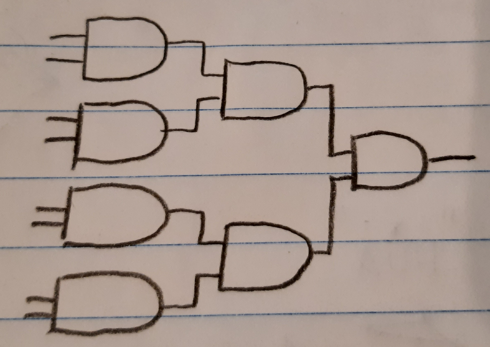
The row of not gates are placed before the first row of AND gates, negating whichever we need. In the example below we do NOT, FREE, FREE, NOT... FREE, NOT, NOT, FREE,
so that it only returns true at (n==0b0110_1001) => (n==0x69) => (n==105).
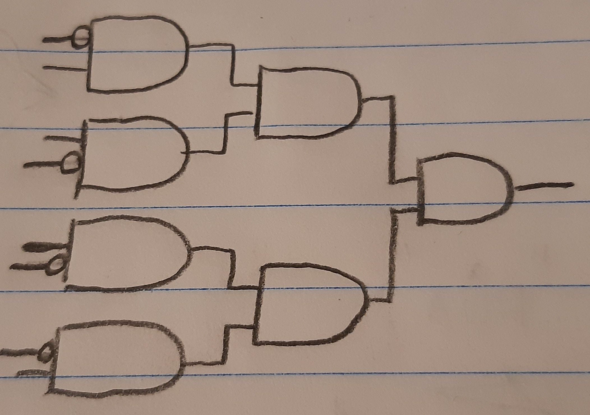
But before we can build this is BEAM, we must first asks ourselves, "How far apart should the initial row of AND gates be placed?".
If we only want to use the 8 bit counter's output once, we can of course build the Default Identity comparator as densily as we can fit the AND gates together.
But in a much larger curcuit, where we would want to retain the 8 bit counter's output despite using it, we have to be a little more tactical with our builds.
splitting a single beam of arrows in two perpendicular direction is simple (single diamond, or square for diagonal directions), and making one of the outgoinging signals be of
the same direction as the initial beam of arrows is also rather simple (turn the signal 90 degrees with a diamond or square, together with its opponent as to block one
outgoing beam). The issue arrises when we have two beams we want to split.
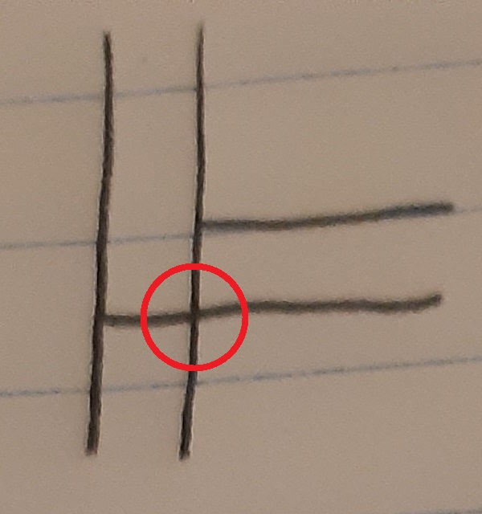
We run into a collision, unless we include a bridge
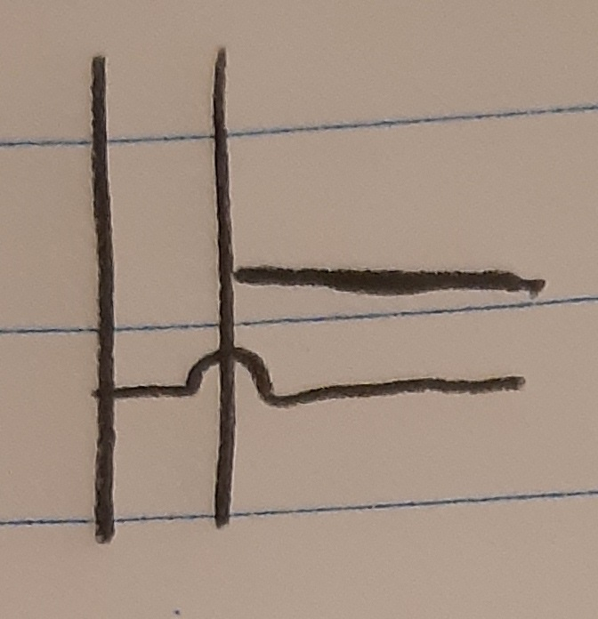
We need A LOT of bridges when we need to cross 8 Beams and prevent any possible collision
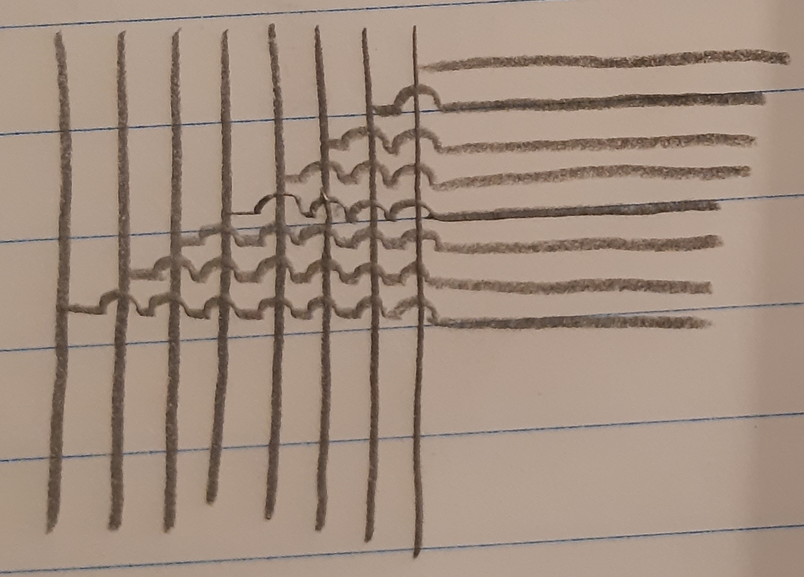
Our bridges in BEAM are 10x10 cells big, and the final 8 beam bridge looks like this
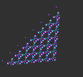
We can now get back to designing the default Identity comparator. The AND gate's 8 initital input must be 10 cells apart each!
That means we will be splitting the AND gate in two halves, like so:
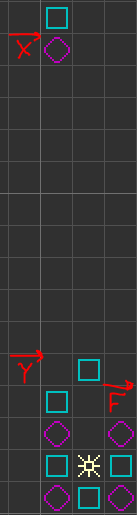
We combine all And gates to form our default Identity Comparator:
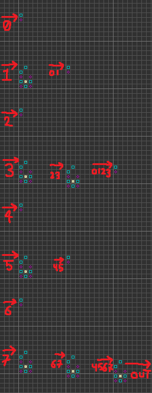
Add our NOT gates where we decided to do so, and squash it all together:
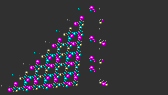
We use this NOT gate as its path exists where the path would otherwise have been, so we avoid having to move anything around. Just add these where we need them:
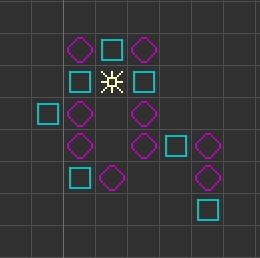
Beautiful! but there's one last fix we need to take care off.... Each of the Bridges offsets the signal by 1, which
is done with some internal diagonal beams. This means, that if we were to make an array of the 8 bit bridges,
we would have some bit beams set further back than others, while still maintaining the same progression downwards
(as some bit beams pass through far more bridges than others). This will make the beams out of sync, and they will reach their AND gates
more and more out of sync, the further down the array we are.
There's only one thing we can do; Send the beams forward again without making them lose downwards progression..
With diagonals.
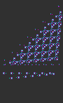